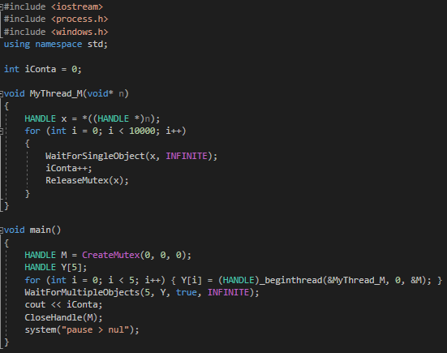

Introduzione
La race condition, anche chiamata race hazard, è un problema che può verificarsi in campo informatico nel multi-threading programming ed è dovuto al tentativo di thread di pari priorità di un programma di eseguire azioni in parallelo. In una macchina single-core, le azioni vengono eseguite in sequenza partendo da quella che è stata richiesta per prima (sempre considerando nessuna priorità). Partendo da questo presupposto, che succede se due thread vengono creati nello stesso momento e tentano di compiere la semplice azione di 2 stampe? Schematizzando, questo è quello che vogliamo dal programma e riportiamo sotto il risultato desiderato:
| Time | Thread1 | Thread2 |
|---|---|---|
| 1 | Print ID | |
| 2 | Print "|" | |
| 3 | Print ID | |
| 4 | Print "|" |
RESULT: 5888 | 6288 |
| Time | Thread1 | Thread2 |
|---|---|---|
| 1 | Print ID | |
| 2 | Print ID | |
| 3 | Print "|" | |
| 4 | Print "|" |
RESULT: 57007000 ||
Come detto in precedenza, la macchina può fare una sola azione alla volta e il compito della macchina è quella di assegnare un tempo ad ogni azione; se tutti e due i thread inviano una richiesta, queste verranno entrambe eseguite: il problema sta nel fatto che l'azione di stampa deve essere assegnata ad un'unità di tempo (ricordando che ad ogni unità di tempo può essere assegnata una sola azione) creando così la possibilità che due thread eseguano i comandi, che dovrebbero essere in successione, in sincrono, in una sorta di competizione ("race") per essere eseguiti per primi: praticamente come due auto in corsa su una pista con un’unica corsia, dove chi è partito per primo sarà sempre in testa durante la corsa, ma alla fine l'ultima spingerà fuori i primi prendendo il loro posto al traguardo . Questa è una grossa semplificazione: in realtà molte altre azioni vengono eseguite nella macchina interferendo con i compiti del programma peggiorando o sistemando questo ritardo...
CODE:
Esempio pratico
Spiegato il problema, prendiamo degli esempi pratici dove questo race hazard crea delle vere complicazioni, cioè nei thread con competizione. Si dice che un thread è competitivo con un altro quando tutti e due usufruiscono, per il compito dato dal codice, di una stessa zona di memoria lavorando su di essa ed eseguendo azioni non allo scopo di essere utili al secondo thread. Prendiamo ad esempio un programma competitivo che tenta di incrementare una variabile accessibile da entrambi i thread fino a 2; alcuni possibili output sono questi:
| Time | Thread1 | Thread2 | *&iConta |
|---|---|---|---|
| 1 | Read | 0 | |
| 2 | Increase | 0 -> 1 | |
| 3 | Write | 1 | |
| 4 | Read | 1 | |
| 5 | Increase | 1 -> 2 | |
| 6 | Write | 2 |
| Time | Thread1 | Thread2 | *&iConta |
|---|---|---|---|
| 1 | Read | 0 | |
| 2 | Read | 0 | |
| 3 | Increase | 0 -> 1 | |
| 4 | Increase | 0 -> 1 | |
| 5 | Write | 1 | |
| 6 | Write | 1 |
Come possiamo notare i thread competono per incrementare la variabile, ma nel secondo output mostrato nell'esempio, dal momento che il secondo thread ha letto un dato sbagliato continuerà ad eseguire l’azione desiderata sulla variabile con valore errato e, infine, scriverà il valore errato nella cella di memoria; il primo thread avrà fatto la stessa cosa, ma dato che è il primo ad essere eseguito possiamo considerarlo come quello che sta facendo bene il suo compito. Alla fine il programma ci darà un risultato sbagliato perché stavano competendo in una corsa a chi prima incrementava, quando invece avrebbero dovuto cooperare per arrivare a 2.
Quindi, scaliamo questo codice dando a 5 thread il compito di fare 1.000.000 di incrementi: quando uno dei thread effettua l'azione di lettura, prende un valore e ci lavora, mentre nel frattempo un altro thread farà la stessa cosa ma con un altro valore, forse uguale, forse diverso... Tutti e due incrementeranno il loro valore e faranno un'azione di scrittura nella stessa area di memoria con il proprio valore. Infine siamo certi che ci saranno 5 milioni di azioni di scrittura, ma i thread, lavorando semi-indipendentemente dagli altri, causeranno alcune azioni di scrittura che, avendo inizialmente letto un diverso valore, potrebbero sovrascrivere quello che era già stato incrementato con uno di valore più basso.
CODE:
RESULT: 3291884
Note
Come abbiamo potuto vedere dai programmi sopra riportati, questo concetto di competizione non sta affatto aiutando il programma. Ma facciamo un altro esempio: mettiamo che l’obbiettivo dei thread non fosse solo quello di incrementare la variabile di 1.000.000 tutti in sync, ma di incrementarla finché la variabile assume il valore 1.000.000 (quindi col risultato finale per forza 1.000.000). La domanda è: ma il risultato si raggiunge più velocemente con un singolo thread o con più thread? Verrebbe normale pensare che se più thread lavorano per raggiungere un obbiettivo comune come questo, il lavoro è svolto più velocemente. Riflettendo, però, si è visto che per ogni unità di tempo può essere eseguita una sola azione e se le azioni sono sincronizzate con quelle di un secondo thread può accadere che delle variabili vengano sovrascritte con valori uguali se non più bassi che faranno perdere tempo al programma, dal momento che saranno necessarie più azioni per rimediare al decremento, rendendo nella realtà un solo thread effettivamente più efficiente.
CODE:

Effettivamente dando come output di tempo:
RESULT: MAIN: 3
RESULT: THREAD: 8
"Fix"
Quindi usare i thread, oltre a dare errori, è più lento. C'è allora un modo per evitare che due variabili interferiscano tra
loro durante l'elaborazione? Si: usando i semafori... Creiamone uno.
La logica dietro un semaforo è bloccare il procedimento di un pezzo di codice, che potrebbe contenere un'azione di modifica di una variabile,
per tutti i thread tranne uno, per il quale invece continua a funzionare, in modo che sulla variabile lavori solo
un potenziale modificatore. Una volta finita l'azione, viene permesso a un altro thread di lavorare e così via. In questo modo, lentamente e uno alla volta tutti i thread raggiungeranno il loro obbiettivo comune.
A tal fine usiamo un boolean che rappresenta il rosso o il verde di un semaforo.
CODE:
RESULT: 4999960
Come possiamo notare non ha funzionato, ma ci siamo andati vicino, molto più vicino rispetto all'esecuzione senza semaforo... Ma la logica è giusta... come
mai non ha funzionato? Semplice: siamo a un livello di programmazione troppo alto. Infatti, durante il cambio di semaforo, solo un thread andava avanti, eccetto rare volte
in cui più thread partono appena diventa verde il semaforono, prima che cambi in rosso, causando una race condition. Questo perché manca qualcosa
al semaforo, una sorta di "blocca-qualunque-partenza-mentre-cambio-colore" che, difatti, è un'esclusiva del basso livello.
In nostro soccorso arrivano due altri metodi per il semaforo, scritti in un linguaggio più basso di livello, quindi in grado di svolgere questa azione: il semaforo e il mutex.
CODE:
RESULT: 50000
CODE:
RESULT: 50000
Funzionano, daranno sempre il risultato voluto, quindi tutti felici? Non troppo, in realtà abbiamo sacrificato efficienza per completezza, cioè, il nostro
programma è lento, troppo lento, ma purtroppo su questo non possiamo farci nulla; la domanda che resta è solo una quindi, semaforo o mutex?
Tutti e due fanno ciò che è richiesto e dal codice sembrano essere completamente uguali, se non per parametri e nome delle funzioni; l'unica cosa in cui si
differenziano è il livello macchina in cui lavorano e la funzionalità. Il semaforo è, difatti, a livello applicazione e può presentare più stadi oltre verde e rosso;
il mutex, invece, è a kernel level (sistema operativo) e ha solo rosso e verde. A questo livello, alcune azioni sono mutex-protected, cioè,
più pesanti e quindi con tempi di esecuzione più lenti, ma solo quando sono presenti azioni più pesanti di un banale incremento.
Testando questo con una azione più complicata, proviamo a vedere, su 500 tentativi per 3 prove, quante volte è stato più veloce il semaforo del mutex e viceversa.
CODE:
| Prova | Semaforo | Mutex |
|---|---|---|
| 1 | 382 | 118 |
| 2 | 371 | 129 |
| 3 | 445 | 55 |
Il semaforo è stato infatti più veloce la maggior parte delle volte, ma come detto in precedenza, se provassimo a fare questo con azioni molto meno complicate il risultato sarebbe 50%-50%.
Conclusione
In conclusione, come possiamo notare questo è un problema che potrebbe accadere molto spesso, sopratutto se molti thread competono per la stessa variabile. Inoltre, questa race condition non è gestita dal sistema operativo, dato che il suo lavoro non è quello di gestire tutti gli errori, ma, come detto in precedenza, quello di svolgere le richieste assegnate il più velocemente possibile. Purtroppo, non esistono neanche programmi in grado di risolvere questo problema, dal momento che non esistono programmi in grado di interferire con l'assegnazione dei tempi gestiti dal sistema operativo, ma esistono alcuni programmi esterni utili per debugging la cui funzione principale è quella di accorgersi di quando si verifica questa sincronizzazione. Non possono però far nulla per evitarla: è compito del programmatore gestire il programma, preferibilmente non gestendo la race condition quando si è ormai verificata, ma tentando di evitarla completamente.
Riportiamo di seguito alcuni eventi causati dalla race condition:
Therac-25
Una macchina “radiation therapy” che per questo errore infliggeva nel paziente massive dosi di radiazioni.
http://sunnyday.mit.edu/papers/therac.pdf Punto 3.Spirit (rover)
La macchina che nel 2004 andò a scattare delle foto su marte ebbe di problemi che vennero risolti per colpa di una race hazard
https://en.wikipedia.org/wiki/Spirit_(rover)END~
PDF: OLD
Race Condition v2 (1)